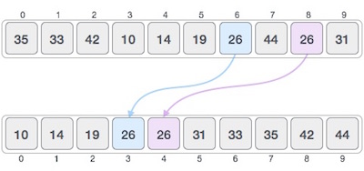
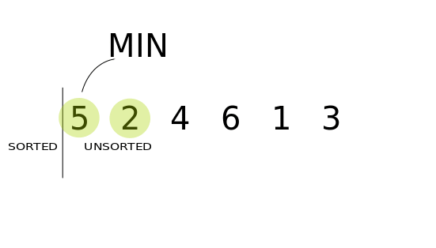
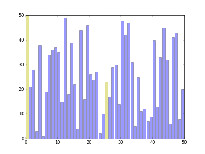
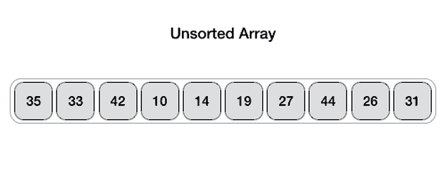
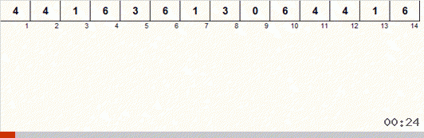

排序算法在计算机科学入门课程中很普遍，在学习排序算法的时候，涉及到大量的各种核心算法概念，例如大 O O O
排序算法是用来根据元素对应的比较运算符重新排列给定的数组的算法，输出的数组是一个根据比较符从小到大或者从大到小依次排列的数组。比较运算符是用于确定相应数据结构中元素的新顺序，比如在整数数组里面，对应的比较符号就是大于或者小于号，用户也可以自己定义对应的比较运算符。
比如如果输入是[ 4 , 2 , 3 , 1 ] [4,2,3,1] [ 4 , 2 , 3 , 1 ] [ 1 , 2 , 3 , 4 ] [1,2,3,4] [ 1 , 2 , 3 , 4 ]
如果在数组中有两个元素是相等的，在经过某个排序算法之后，原来在前面的的那个元素仍然在另一个元素的前面，那么我们就说这个排序算法是稳定的。

如果在排序之后，原来的两个相等元素中在前面的一个元素被移到了后面，那么这个算法就是不稳定的。
比如排序之前数组为[ 3 ( a ) , 2 , 3 ( b ) ] [3(a),2,3(b)] [ 3 ( a ) , 2 , 3 ( b ) ] a a a b b b 3 3 3 [ 2 , 3 ( a ) , 3 ( b ) ] [2,3(a),3(b)] [ 2 , 3 ( a ) , 3 ( b ) ] [ 2 , 3 ( b ) , 3 ( a ) ] [2,3(b),3(a)] [ 2 , 3 ( b ) , 3 ( a ) ]
再比如在按照身高排队去食堂打饭的过程中，小明和小刚的身高都是 170，原来小明在小刚前面，但是经过排序之后小明发现小刚到了他前面了，这样小明肯定对这个不稳定的排序有意见。
时间复杂度反映了算法的排序效率，通常用大O O O O ( n ) O(n) O ( n ) n n n
空间复杂度反映了算法需要消耗的空间，比如O ( 1 ) O(1) O ( 1 )
如果一个排序算法不需要额外的存储空间，可以直接在原来的数组完成排序操作，这个算法可以被称之为原地算法 ，空间复杂度是O ( 1 ) O(1) O ( 1 )
如果一个算法需要在排序的过程中使用比较操作来判断两个元素的大小关系，那么这个排序算法就是比较排序 ，大部分排序算法都是比较排序，比如冒泡排序、插入排序、堆排序等等，这种排序算法的平均时间复杂度最快也只能是O ( n l o g n ) O(nlogn) O ( n l o g n )
非比较排序 比较典型的有计数排序、桶排序和基数排序，这类排序能够脱离比较排序时间复杂度的束缚，达到O ( n ) O(n) O ( n )
首先定义基本的交换数组元素的基本方法，节省后面的代码量。
1 2 3 4 5 private void swap (int [] nums, int i, int j) int temp = nums[i]; nums[i] = nums[j]; nums[j] = temp; }
冒泡排序是从左到右依次比较相邻的两个元素，如果前一个元素比较大，就把前一个元素和后一个交换位置，遍历数组之后保证最后一个元素相对于前面的永远是最大的。然后让最后一个保持不变，重新遍历前n − 1 n-1 n − 1 n − 1 n-1 n − 1 n − 1 n-1 n − 1 2 2 2 2 2 2
因为这个排序的过程很像冒泡泡，找到最大的元素不停的移动到最后端，所以这个排序算法就叫冒泡排序
用 Java 代码实现
1 2 3 4 5 6 7 8 private void bubbleSort (int [] nums) for (int i = nums.length - 1 ; i >= 1 ; i--) { for (int j = 1 ; j <= i; j++) { if (nums[j-1 ]>nums[j]) swap(nums, j, j-1 ); } } }
冒泡排序的最大特点就是代码简单，短短的五行代码就能完成整个排序的操作。
时间复杂度比较稳定不管怎样都需要O ( n 2 ) O(n^2) O ( n 2 ) O ( n 2 ) O(n^2) O ( n 2 )
空间复杂度是O ( 1 ) O(1) O ( 1 )
算法是稳定的，在冒泡的过程中如果两个元素相等，那么他们的位置是不会交换的。
选择排序的思路比较简单，先找到前n n n n − 1 n-1 n − 1 n − 1 n-1 n − 1 n − 2 n-2 n − 2 n − 2 n-2 n − 2 2 2 2
其实整个过程和冒泡排序差不多，都是要找到最大的元素放到最后，不同点是冒泡排序是不停的交换元素，而选择排序只需要在每一轮交换一次。

实现代码
1 2 3 4 5 6 7 8 9 10 11 private void selectionSort (int [] nums) for (int i = nums.length - 1 ; i > 0 ; i--) { int maxIndex = 0 ; for (int j = 0 ; j <= i; j++) { if (nums[maxIndex]<nums[j]) { maxIndex = j; } } swap(nums, maxIndex, i); } }
时间复杂度和冒泡排序一样比较稳定，都需要O ( n 2 ) O(n^2) O ( n 2 ) O ( n 2 ) O(n^2) O ( n 2 ) O ( 1 ) O(1) O ( 1 )
选择排序最简单的版本是不稳定的，比如数组[ 1 , 3 , 2 , 2 ] [1,3,2,2] [ 1 , 3 , 2 , 2 ] [ 1 , 3 , 2 ( a ) , 2 ( b ) ] [1,3,2(a),2(b)] [ 1 , 3 , 2 ( a ) , 2 ( b ) ] [ 1 , 2 ( b ) , 2 ( a ) , 3 ] [1,2(b),2(a),3] [ 1 , 2 ( b ) , 2 ( a ) , 3 ] 2 2 2 2 2 2 3 3 3
不过可以改进一下选择排序变成稳定的。原来不稳定是因为交换位置导致的，现在如果改成插入操作 （不是使用数组而是链表，把最大的元素插入到最后）的话，就能变成稳定排序。比如[ 1 , 3 , 2 ( a ) , 2 ( b ) ] [1,3,2(a),2(b)] [ 1 , 3 , 2 ( a ) , 2 ( b ) ] [ 1 , 2 ( a ) , 2 ( b ) , 3 ] [1,2(a),2(b),3] [ 1 , 2 ( a ) , 2 ( b ) , 3 ]
插入排序的核心思想是遍历整个数组，保持当前元素左侧始终是排序后的数组，然后将当前元素插入到前面排序完成的数组的对应的位置，使其保持排序状态。有点动态规划的感觉，类似于先把前 i-1 个元素排序完成，再插入第 i 个元素，构成 i 个元素的有序数组。
代码实现
1 2 3 4 5 6 7 8 9 private void insertionSort (int [] nums) for (int i = 1 ; i < nums.length; i++) { int j = i; while (j>0 &&nums[j]<nums[j-1 ]) { swap(nums, j, j-1 ); j--; } } }
时间复杂度上，插入排序在最好的情况，也就是数组已经排好序的时候，复杂度是O ( n ) O(n) O ( n ) O ( n 2 ) O(n^2) O ( n 2 )
空间复杂度是O ( 1 ) O(1) O ( 1 )
插入排序是稳定排序，每次交换都是相邻元素的交换，不会有选择排序的那种跳跃式交换元素。
希尔排序可以看作是一个冒泡排序或者插入排序的变形。希尔排序在每次的排序的时候都把数组拆分成若干个序列，一个序列的相邻的元素索引相隔的固定的距离g a p gap g a p g a p gap g a p g a p gap g a p
比如对于数组[ 5 , 2 , 4 , 3 , 1 , 2 ] [5,2,4,3,1,2] [ 5 , 2 , 4 , 3 , 1 , 2 ] [ 5 , 3 ] [5,3] [ 5 , 3 ] [ 2 , 1 ] [2,1] [ 2 , 1 ] [ 4 , 2 ] [4,2] [ 4 , 2 ] [ 3 , 1 , 2 , 5 , 2 , 4 ] [3,1,2,5,2,4] [ 3 , 1 , 2 , 5 , 2 , 4 ] g a p = 1 gap=1 g a p = 1 [ 3 , 2 , 2 ] [3,2,2] [ 3 , 2 , 2 ] [ 1 , 5 , 4 ] [1,5,4] [ 1 , 5 , 4 ] [ 2 , 1 , 2 , 4 , 3 , 5 ] [2,1,2,4,3,5] [ 2 , 1 , 2 , 4 , 3 , 5 ] g a p = 0 gap=0 g a p = 0 [ 1 , 2 , 2 , 3 , 4 , 5 ] [1,2,2,3,4,5] [ 1 , 2 , 2 , 3 , 4 , 5 ]

代码实现
1 2 3 4 5 6 7 8 9 10 11 12 13 14 15 private void shellSor2 (int [] nums) int gap = nums.length >> 1 ; while (gap > 0 ) { for (int i = 0 ; i < gap; i++) { for (int j = i+gap; j < nums.length; j+=gap) { int temp = j; while (temp > i && nums[temp] < nums[temp-gap]) { swap(nums, temp, temp-gap); temp -= gap; } } } gap >>= 1 ; } }
Donald Shell 于 1959 年发布了这种排序算法，运行时间在很大程度上取决于它使用的间隔，在实际使用中，其时间复杂度仍然是一个悬而未决的问题，基本在O ( n 2 ) O(n^2) O ( n 2 ) O ( n 4 3 ) O(n^\frac{4}{3}) O ( n 3 4 )
空间复杂度是O ( 1 ) O(1) O ( 1 )
这个算法是不稳定的，里面有很多不相邻元素的交换操作。
归并排序是典型的使用分治思想 （divide-and-conquer）解决问题的案例。在排序的过程中，把原来的数组变成左右两个数组，然后分别进行排序，当左右的子数组排序完毕之后，再合并这两个子数组形成一个新的排序数组。整个过程递归进行，当只剩下一个元素或者没有元素的时候就直接返回。
代码实现
1 2 3 4 5 6 7 8 9 10 11 12 13 14 15 16 17 18 19 20 21 22 private void mergeSort (int [] nums, int left, int right) if (left >= right) return ; int mid = (left+right) / 2 ; mergeSort(nums, left, mid); mergeSort(nums, mid+1 , right); int [] temp = new int [right-left+1 ]; int i=left,j=mid+1 ; int cur = 0 ; while (i<=mid&&j<=right) { if (nums[i]<=nums[j]) temp[cur] = nums[i++]; else temp[cur] = nums[j++]; cur++; } while (i<=mid) temp[cur++] = nums[i++]; while (j<=right) temp[cur++] = nums[j++]; for (int k = 0 ; k < temp.length; k++) { nums[left+k] = temp[k]; } }
时间复杂度上归并排序能够稳定在O ( n l o g n ) O(nlogn) O ( n l o g n ) l o g n logn l o g n O ( n l o g n ) O(nlogn) O ( n l o g n ) O ( n ) O(n) O ( n )
归并排序是稳定排序，保证原来相同的元素能够保持相对的位置。
快速排序（有时称为分区交换排序）是一种高效的排序算法。由英国计算机科学家 Tony Hoare 于 1959 年开发并于 1961 年发表，它在现在仍然是一种常用的排序算法。如果实现方法恰当，它可以比主要竞争对手（归并排序和堆排序）快两到三倍。
其核心的思路是取第一个元素（或者最后一个元素）作为分界点，把整个数组分成左右两侧，左边的元素小于或者等于分界点元素，而右边的元素大于分界点元素，然后把分界点移到中间位置，对左右子数组分别进行递归，最后就能得到一个排序完成的数组。当子数组只有一个或者没有元素的时候就结束这个递归过程。
其中最重要的是将整个数组根据分界点元素划分成左右两侧的逻辑，目前有两种算法，图片展示的是第一种。

第一种实现，也是图片中的排序逻辑的实现：
1 2 3 4 5 6 7 8 9 10 11 12 13 14 15 16 17 private void quickSort (int [] nums, int left, int right) if (left >= right) return ; int lo = left+1 ; int hi = right; while (lo<=hi) { if (nums[lo]>nums[left]) { swap(nums, lo, hi); hi--; } else { lo++; } } lo--; swap(nums, left, lo); quickSort2(nums, left, lo-1 ); quickSort2(nums, lo+1 , right); }
第二种，不用hi来标记大于分界点元素的最右侧，而是只用一个lo来标记最左侧。在遍历整个数组的过程中，如果发现了一个小于等于分界点元素的元素，就和lo+1位置的元素交换，然后lo自增，这样可以保证lo的左侧一定都是小于等于分界点元素的，遍历到最后lo的位置就是新的分界点位置，和最开始的分界点元素位置互换。
1 2 3 4 5 6 7 8 9 10 11 12 13 14 15 private void quickSort (int [] nums, int left, int right) if (left>=right) return ; int cur = left + 1 ; int lo = left; while (cur <= right) { if (nums[cur] <= nums[left]) { swap(nums, lo+1 , cur); lo ++; } cur++; } swap(nums, left, lo); quickSort(nums, left, lo-1 ); quickSort(nums, lo+1 , right); }
时间复杂度在最佳情况是O ( n l o g n ) O(nlogn) O ( n l o g n ) O ( n 2 ) O(n2^) O ( n 2 ) O ( n l o g n ) O(nlogn) O ( n l o g n )
空间复杂度在O ( l o g n ) O(logn) O ( l o g n ) O ( n ) O(n) O ( n ) O ( l o g n ) O(logn) O ( l o g n )
堆排序是一个效率要高得多的选择排序，首先把整个数组变成一个最大堆，然后每次从堆顶取出最大的元素，这样依次取出的最大元素就形成了一个排序的数组。堆排序的核心分成两个部分，第一个是新建一个堆，第二个是弹出堆顶元素后重建堆。
新建堆不需要额外的空间，而是使用原来的数组，一个数组在另一个维度上可以当作一个完全二叉树（除了最后一层之外其他的每一层都被完全填充，并且所有的节点都向左对齐），对于下标为i i i 2 ∗ i + 1 2*i+1 2 ∗ i + 1 2 ∗ i + 2 2*i+2 2 ∗ i + 2
在弹出根节点之后（把根节点的元素和树的最底层最右侧的元素互换），堆被破坏，需要重建。从根节点开始和两个子节点比较，如果父节点比最大的子节点小，那么就互换父节点和最大的子节点，然后把互换后在子节点位置的父节点当作新的父节点，和它的子节点比较，如此往复直到最后一层，这样最大堆就重建完毕了。
代码实现：
1 2 3 4 5 6 7 8 9 10 11 12 13 14 15 16 17 18 19 20 21 22 23 24 25 26 27 28 29 30 31 32 33 34 private void heapSort (int [] nums) heapify(nums); for (int i = nums.length - 1 ; i >= 1 ; i--) { swap(nums, 0 , i); rebuildHeap(nums, 0 ,i-1 ); } } private void heapify (int [] nums) for (int i = 1 ; i < nums.length; i++) { int par = (i-1 )>>1 ; int child = i; while (child>0 &&nums[par]<nums[child]) { swap(nums, par, child); child = par; par = (par-1 ) >> 1 ; } } } private void rebuildHeap (int [] nums, int par, int last) int left = 2 *par+1 ; int right = 2 *par+2 ; int maxIndex = left; if (right<=last && nums[right]>nums[left]) { maxIndex = right; } if (left<=last && nums[par] < nums[maxIndex]) { swap(nums, par, maxIndex); rebuildHeap(nums, maxIndex, last); } }
时间复杂度稳定在O ( n l o g n ) O(nlogn) O ( n l o g n ) O ( l o g n ) O(logn) O ( l o g n ) O ( n l o g n ) O(nlogn) O ( n l o g n ) O ( l o g n ) O(logn) O ( l o g n ) O ( n l o g n ) O(nlogn) O ( n l o g n ) O ( n l o g n ) O(nlogn) O ( n l o g n ) O ( 1 ) O(1) O ( 1 )
堆排序是不稳定，堆得构建和重建的过程都会打乱元素的相对位置。
堆排序的代码量相对于其他的排序算法来说是比较多的，理解上也比较难，涉及到最大堆和二叉树等相关概念。虽然在实际使用中相对于快速排序不是那么好用，但是最坏情况下的O ( n l o g n ) O(nlogn) O ( n l o g n )
二叉树搜索排序用数组内的所有元素构建一个搜索二叉树，然后用中序遍历重新将所有的元素填充回原来的数组中。因为搜索二叉树不能用数组来表示，所以必须使用额外的数据结构来构建二叉树。
代码实现：
1 2 3 4 5 6 7 8 9 10 11 12 13 14 15 16 17 18 19 20 21 22 23 24 25 26 27 28 29 30 31 32 33 34 35 36 37 38 39 40 41 42 private int [] bstSort(int [] nums) { TreeNode root = new TreeNode(nums[0 ]); for (int i = 1 ; i < nums.length; i++) { buildTree(root, nums[i]); } inorderTraversal(root, nums, new int [1 ]); return nums; } private void inorderTraversal (TreeNode node, int [] nums, int [] pos) if (node == null ) return ; inorderTraversal(node.left, nums, pos); nums[pos[0 ]++] = node.val; inorderTraversal(node.right, nums, pos); } private void buildTree (TreeNode node, int num) if (node == null ) return ; if (num >= node.val) { if (node.right == null ) { node.right = new TreeNode(num); } else { buildTree(node.right, num); } } else { if (node.left == null ) { node.left = new TreeNode(num); } else { buildTree(node.left, num); } } } static class TreeNode int val; TreeNode left; TreeNode right; public TreeNode (int val) this .val = val; } }
时间复杂度上面根据原数组变化比较大，最差情况是整个数组是已经排好序的，这样二叉树会变成一个链表结构，时间复杂度退化到了O ( n 2 ) O(n^2) O ( n 2 ) O ( n l o g n ) O(nlogn) O ( n l o g n )
空间复杂度是O ( n ) O(n) O ( n ) n n n
这个算法是稳定，在构建二叉树的过程中能够保证元素顺序的一致性。
计数排序是一个最基本的非比较排序，能够将时间复杂度提高到O ( n ) O(n) O ( n )
计数排序的过程是创建一个长度为数组中最小和最大元素之差的数组，分别对应数组中的每个元素，然后用这个新的数组来统计每个元素出现的频率，然后遍历新的数组，根据每个元素出现的频率把元素放回到老的数组中，得到已经排好序的数组。

代码实现：
1 2 3 4 5 6 7 8 9 10 11 12 13 14 15 16 17 18 19 private void countSort (int [] nums) int min = Integer.MAX_VALUE; int max = Integer.MIN_VALUE; for (int num : nums) { min = Math.min(min, num); max = Math.max(max, num); } int [] count = new int [max-min+1 ]; for (int num : nums) { count[num-min]++; } int cur = 0 ; for (int i = 0 ; i < count.length; i++) { while (count[i]>0 ) { nums[cur++] = i+min; count[i]--; } } }
计数排序能够将时间复杂度降低到O ( n + r ) O(n+r) O ( n + r ) r r r
空间复杂度为O ( n + r ) O(n+r) O ( n + r )
计数排序是稳定的，原来排在前面的相同在计数的时候，仍然是排在每个计数位置的前面，在最后复原的时候也是从每个计数位的前面开始复原，所以最后相对位置还是相同的。
桶排序是将所有的元素分布到一系列的区间（也可以称之为桶 ）里面，然后对每个桶里面的所有元素分别进行排序的算法。
首先新建一个桶的数组，每个桶的规则需要提前制定好，比如元素在 0~9 为一个桶、10~19 为一个桶。然后遍历整个待排序的数组，把元素分配到对应的桶里面。接下来单独对每个桶里面的元素进行排序，排序算法可以选择比较排序或者非比较排序，得到排序后的数组。最后把所有的桶内的元素还原到原数组里面得到最后的排序数组。
代码实现：
1 2 3 4 5 6 7 8 9 10 11 12 13 14 15 16 17 18 19 20 21 22 23 24 25 26 private void bucketSort (int [] nums) int INTERVAL = 100 ; int min = Integer.MAX_VALUE; int max = Integer.MIN_VALUE; for (int num : nums) { min = Math.min(min, num); max = Math.max(max, num); } int count = (max - min + 1 ); int bucketSize = (count % INTERVAL == 0 ) ?( count / INTERVAL) : (count / INTERVAL+1 ); List<Integer>[] buckets = new List[bucketSize]; for (int num : nums) { int quotient = (num-min) / INTERVAL; if (buckets[quotient] == null ) buckets[quotient] = new ArrayList<>(); buckets[quotient].add(num); } int cur = 0 ; for (List<Integer> bucket : buckets) { if (bucket != null ) { bucket.sort(null ); for (Integer integer : bucket) { nums[cur++] = integer; } } } }
时间复杂度上桶排序和计数排序一样，是O ( n + r ) O(n+r) O ( n + r )
空间复杂度也是O ( n + r ) O(n+r) O ( n + r )
桶排序是稳定的（前提是桶内排序的逻辑是稳定的），和计数排序的逻辑类似，遍历过程插入桶的过程中没有改变相同元素的相对位置，排序也没有改变，最后的还原也没有改变。
基数排序和桶排序有点相似，基数排序中需要把元素送入对应的桶中，不过规则是根据所有数字的某一位上面的数字来分类。
假设当前数组的所有元素都是正数，桶的数量就固定在了 10 个，然后计算出最大元素的位数。首先根据每个元素的最低位进行分组，比如1就放入1这个桶，13就放入3这个桶，111也放入1这个桶，然后把所有的数字根据桶的顺序取出来，依次还原到原数组里面。在第二轮从第二位开始分组，比如1（看作01）放入0这个桶，13放入1这个桶，111也放入1这个桶，再把所有的元素从桶里面依次取出放入原数组。经过最大元素位数次的这样的操作之后，还原得到的数组就是一个已经排好序的数组。
考虑到数组里面还有负数的情况，可以把桶的大小扩大到 19 个，分别代表对应位在-9~9 之间的数字，代码如下：
1 2 3 4 5 6 7 8 9 10 11 12 13 14 15 16 17 18 19 20 21 22 23 24 25 26 27 28 29 30 31 32 33 34 35 private void radixSort (int [] nums) int max = -1 ; int min = 1 ; for (int num : nums) { max = Math.max(max, num); min = Math.min(min, num); } max = Math.max(max, -min); int digits = 0 ; while (max > 0 ) { max /= 10 ; digits++; } List<Integer>[] buckets = new List[19 ]; for (int i = 0 ; i < buckets.length; i++) { buckets[i] = new ArrayList<>(); } int pos; int cur; for (int i = 0 , mod = 1 ; i < digits; i++, mod*=10 ) { for (int num : nums) { pos = (num / mod) % 10 ; buckets[pos+9 ].add(num); } cur = 0 ; for (List<Integer> bucket : buckets) { if (bucket!=null ) { for (Integer integer : bucket) { nums[cur++] = integer; } bucket.clear(); } } } }
时间复杂度基本在O ( n ⋅ k d ) O(n·\frac{k}{d}) O ( n ⋅ d k ) k k k d d d
空间复杂度是O ( n + 2 d ) O(n+2^d) O ( n + 2 d )
基数排序是一个稳定排序算法，在排序添加元素的过程中没有改变相同元素的相互位置。
Timsort 是由 Tim Peters 在 2002 年实现的，自 Python 2.3 以来，它一直是 Python 的标准排序算法。Java 在 JDK 中使用 Timsort 对非基本类型进行排序。Android 平台和 GNU Octave 还将其用作默认排序算法。
Timsort 是一种稳定的混合排序算法，同时应用了二分插入排序和归并排序的思想，在时间上击败了其他所有排序算法。它在最坏情况下的时间复杂度为O ( n l o g n ) O(nlogn) O ( n l o g n ) O ( n ) O(n) O ( n )
由于使用了归并排序，使用额外的空间保存数据，TimSort 空间复杂度是O ( n ) O(n) O ( n )
排序算法
最好情况
平均情况
最差情况
空间复杂度
稳定性
冒泡排序
n 2 n^2 n 2 n 2 n^2 n 2 n 2 n^2 n 2 1 1 1 ✓
选择排序
n 2 n^2 n 2 n 2 n^2 n 2 n 2 n^2 n 2 1 1 1
插入排序
n n n n 2 n^2 n 2 n 2 n^2 n 2 1 1 1 ✓
希尔排序
n l o g n nlogn n l o g n n 4 3 n^\frac{4}{3} n 3 4 n 4 3 n^\frac{4}{3} n 3 4 1 1 1
二叉树排序
n l o g n nlogn n l o g n n l o g n nlogn n l o g n n 2 n^2 n 2 n n n ✓
归并排序
n l o g n nlogn n l o g n n l o g n nlogn n l o g n n l o g n nlogn n l o g n n n n ✓
快速排序
n l o g n nlogn n l o g n n l o g n nlogn n l o g n n 2 n^2 n 2 l o g n logn l o g n
堆排序
n l o g n nlogn n l o g n n l o g n nlogn n l o g n n l o g n nlogn n l o g n 1 1 1
计数排序
-
n + r n+r n + r n + r n+r n + r n + r n+r n + r ✓
桶排序
-
n + r n+r n + r n + r n+r n + r n + r n+r n + r ✓
基数排序
-
n k d n\frac{k}{d} n d k n k d n\frac{k}{d} n d k n + 2 d n+2^d n + 2 d ✓
TimSort
n n n n l o g n nlogn n l o g n n l o g n nlogn n l o g n n n n ✓
备注：r r r d d d k k k
上面的表格总结了讲到的排序算法的时间和空间复杂度以及稳定性等，在实际应用中会有各种排序算法变形的问题，都可以通过优化排序算法来达到优化算法的目的。
如果对时间复杂度要求比较高并且键的分布范围比较广，可以使用归并排序、快速排序和堆排序。
如果不能使用额外的空间，那么快速排序和堆排序都是不错的选择。
如果规定了排序的键的范围，可以优先考虑使用桶排序。
如果不想写太多的代码同时时间复杂度没有太高的要求，可以考虑冒泡排序、选择排序和插入排序。
如果排序的过程中没有复杂的额外操作，直接使用编程语言内置的排序算法就行了。
参考
超详细十大经典排序算法总结（java 代码） 十大经典排序算法 十大经典排序算法（动图演示） Sorting algorithm Timsort Data Structure - Sorting Techniques This is the fastest sorting algorithm ever Timsort: The Fastest sorting algorithm for real-world problems